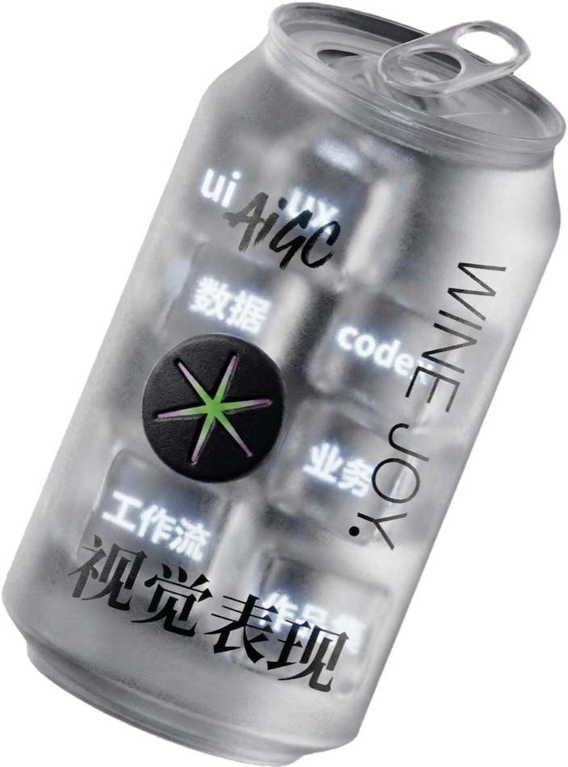
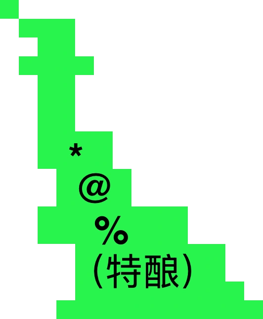
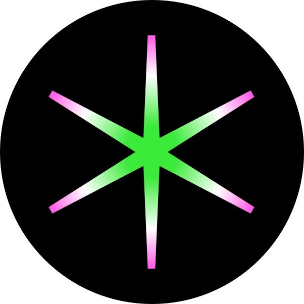
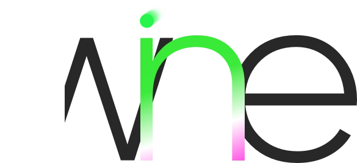

邀请你来一杯：
直播课·建立体系化基础系统能力14（70%课程更新·平均2.5h）
＋一对一辅导·针对性解决学员所有问题14（单次最长不超过1.5h）
＝双轨定制化*陪跑模式


每周学习、每周练习、每周反馈，让问题不积压，成长有节奏。
根据每位同学的基础、短板、能力、项目经历和求职方向，提供针对性指导。
UI 视觉表现·
风格定义完整工作流
掌握多种设计语言
落地
海外
年轻化
海外
年轻化
- 对标真实上线项目
- 对标海外业务场景和用户习惯
- 对标业务增长与视觉需求

02.AI贯穿产品设计工作流
建立一套真正可用于工作的 AI 设计流程。


03.
UX全链路设计思维全面进阶
不只是提升视觉表现，更系统训练用户研究、交互逻辑、产品思维和业务价值，
让作品既好看，也有深度。
从需求分析到方案落地，独立完成一个可以写进作品集的全链路项目。

04.从 Figma 到 Codex,
从 Figma 到 Codex,
完成线上作品集
部署落地。
不只在设计工具中完成效果图，还会借助 Codex 将作品集搭建并发布上线，形成可访问、可分享、可持续迭代的个人职业名片。
05.
作品集内容与视觉双重打磨
从项目选择、案例结构、故事线和业务成果，到页面视觉与展示节奏，
解决作品集“看起来不错，但讲不清价值”的问题。
针对真实招聘场景的
测试题辅导，
体现完整的设计能力。
帮助你理解题目、拆解需求、规划时间和组织提案，
并结合 AI 提升调研、发散和自检效率，让测试题体现完整的设计能力。
AI训练＋真人模拟的面试辅导
通过 AI 高频陪练与真人一对一模拟面试，训练自我介绍、项目表达、业务追问和临场应对，
让你在面试前拥有万无一失的准备，面试中讲清设计逻辑与个人价值，面试后快速更新迭代。